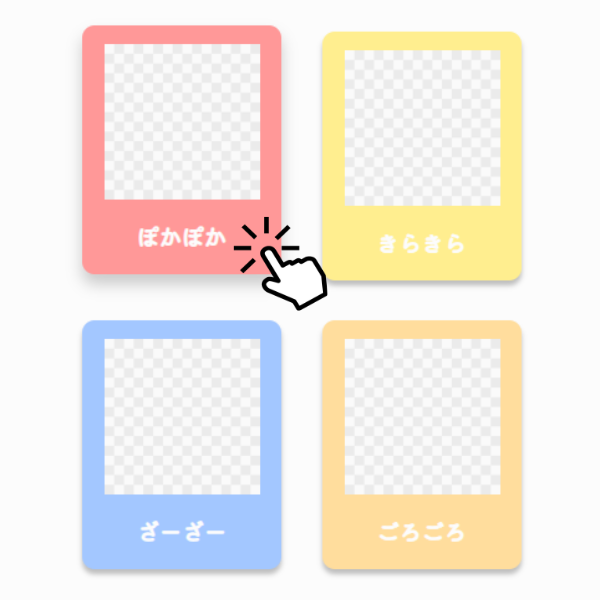
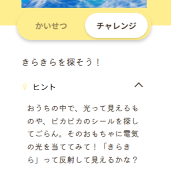

オノマトペずかんとは
オノマトペずかんは、いつもの日常に潜むオノマトペの不思議を、親子で一緒に探求するWeb図鑑です。
１つのオノマトペから、たくさんの知識や会話が生まれるような体験を届けたいと考えています。
このサイトの使い方
-
1. さがす
今の気分や、気になる色からカードを選んでみよう。「どんな音がするかな？」と想像しながらタップしてみてね。
 -
2. しる
「きらきら」と「ぴかぴか」はどう違う？ 子供向けの解説と、大人向けの豆知識で、言葉の面白さに触れてみよう。
 -
3. やってみる・のこす
言葉の意味がわかったらチャレンジ！遊んだ思い出は、素材を印刷してアルバムに残そう。
アルバム素材をみる
調べる、遊ぶ、
そして成長を記録する。
このWeb図鑑が、
あなたの親子の会話をより豊かにし、言葉の成長を支えます。
さあ、一緒にことばの冒険に出かけましょう！
オノマトペをさがす